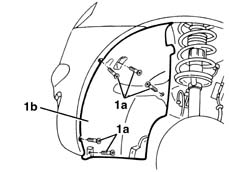
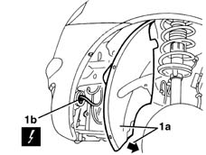
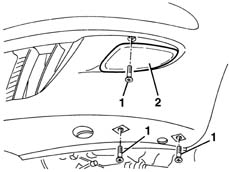

5540D10 l/h or r/h fog lamp (one) - r+r
- Path
- Procedures > 55 ELECTRICAL EQUIPMENT > 5540 EXTERIOR LIGHTING > 5540D fog lamps > 5540D10 l/h or r/h fog lamp (one) - r+r
- Kind
- repair procedure (removal / refitting; the operation number is the code)
- Applies to
- all engines; all production periods
- Interactive page
- https://sloeber94.github.io/elrnDB-lYpsln/en/#/2429418
Applies to: all engines; all production periods
 Removing
Removing
 Refitting
RefittingPlace the vehicle on a lift.
1. Undo the bolts (1a) securing frnt wheel arch (1b).

Applies to: all engines; all production periods
1. Move wheel arch (1a) slightly aside and disconnect the fog lamp electrical connections (1b).
 | Name | Connector |
|---|---|---|
1b | Left fog lamp |
| Name | Connector |
|---|---|---|
1b | Right fog lamp |

Applies to: all engines; all production periods
1. Undo the foglamp bolts.
2. Remove the foglamp by withdrawing from the wheel compartment.

Applies to: all engines; all production periods
Refitting
RemovingCheck that the foglamp is not damaged.
Position the fog lamp in its housing.
Tighten the bolts.
Connect the electrical connection.
Place the front wheel arch in its housing and tighten the fixing bolts.
Remove the vehicle from the lift.
Test the electrical operation of the fog lamp.
If necessary, see op. 5540D38 (foglamp adjustment)